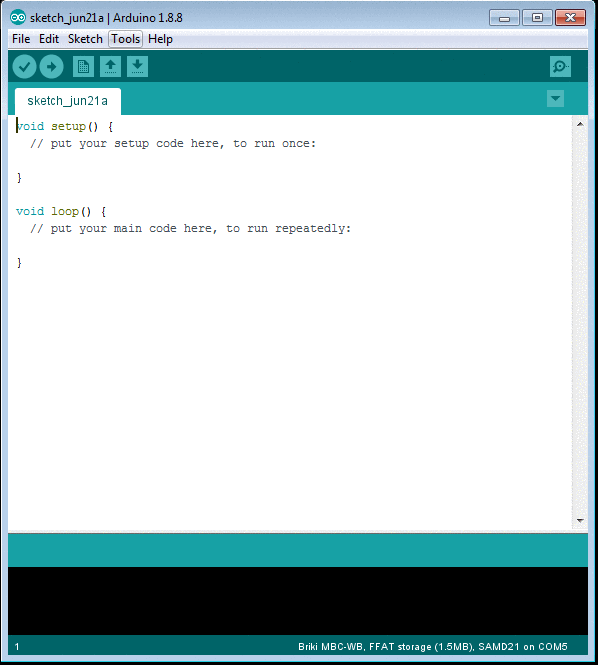
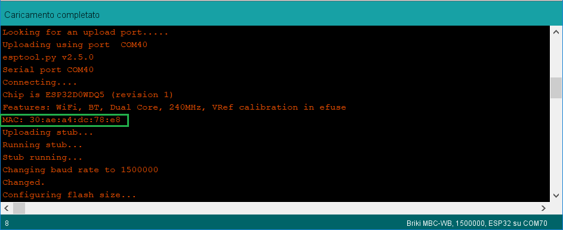
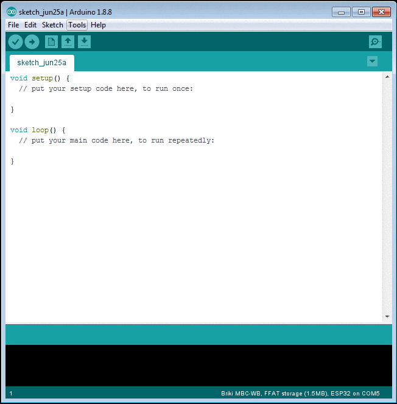

- Generated by
 1.8.15
1.8.15
|
MBC-WB Documentation
1.3.0
|
The aim of this document is to explain the main software features of the MBC-WB in the Arduino® IDE environment. To quickly set up the Arduino environment to work with MBC-WB, take a look to Platform Installation section.
The Arduino IDE environment is intended to simplify the user experience. However other IDEs can be used to interact with the board, provided that supplied tools are used to upload the firmware. For instructions regarding manually uploading firmware, see Use other IDEs section.
The MBC-WB features 2 microcontrollers on board: one SAMD21 (ATSAMD21G18A) and one ESP32 (ESP32-D0WD). Both the MCUs are fully accessible in programming.
The two microcontrollers are complementary: each one adds unique features to the board and enanches the weak points of the companion microcontroller.
The ESP32 allows WiFi and Bluetooth (BR/EDR and 4.2) communication and features a dual core 240MHz processor. SAMD21 has a 48MHz microcontroller with an high quality analog/digital section that makes it the best choice for reading sensors and controlling actuators.
Unlike most boards with a WiFi module you can find on the market, here it's up to you to decide who is the master microcontroller and what kind of information are excanghed between the twos. This will let the MBC fit your application, avoiding any waste of resources.
To get more information about how WiFi module can be used, take a look at Using WiFi module section. If you are interested in achieving better performances from the control features of SAMD microcontroller, look at Advanced control features section.
If you need more specific information about the board and/or other development environments, please visit support section of our website.
The SAMD21 is the chip directly connected to the USB connector. This means it will be responsible for firmware updates, on both the MCUs, throught the USB interface.
The application in charge of firmware updates is the SAMD's bootloader. The SAMD's bootloader is a custom implementation of the standard SAM-BA bootloader.
It is able to parse and execute all the SAM-BA instructions, plus some customized commands have been added to enable programming of ESP32.
To actually upload some firmware in the board, the Arduino IDE foresees a very simple method.
After having selected "Briki MBC-WB" board from Tools menu, it will be enough selecting the target of the upload from Tools > Processor menu (the available choises are SAMD21 or ESP32).
Now just press upload button on the Arduino IDE: the IDE will compile the current sketch and will load it into the selected target.

Note: Bootloader on SAMD21 is invoked by opening and closing the USB connection at a given speed.
This means that a part of the sketch running on SAMD21 is always listening for events on USB interface for starting bootloader when requested.
If, for some reason, SAMD21 sketch stops its execution (due to a crash or something similar) the USB connection will be lost and will not be possible to start the bootloader with the method described above.
In this case, it is possible to manually invoke bootloader, by connecting samd reset pin to ground twice in a brief timelap (hundreds of milliseconds). In this way the bootloader will start and the USB connection will be restored, allowing to upload new firmware images.
It is also possible to upload the firmware onboard by using the Over The Air procedure. This method relies on WiFi communication provided by ESP32 MCU. Even in this case, it is possible to program both the MCUs.
OTA programming is granted by a dedicated thread in the ESP core. This thread is build behind the scenes: it is hidden from the sketch, but will be compiled and loaded in all the firmwares loaded on the ESP32.
In order to allow OTA programming even if the user sketch doesn't use WiFi connection, the thread raise an AP up, so that the board will always be reachable. The AP the board will be reachable to is MBC-WB-XXXXXX, where XXXXXX represents the final part of the MAC associated to the WiFi radio.
Moving OTA programming in a dedicated thread ensure that, even if the sketch application freezes, the updating will always been possible (providing that the sketch application doesn't lead to repeated board resets).
To actually upload some firmware through OTA programming a dedicated tool has been provided. See tools installation instructions for details.
To load a sketch in one of the MCUs, just select the desired MCU from Tools > Processor menu and compile the sketch. After compiling is done, select Tools > MBC OTA Utility from Tools menu. After some moment the OTA tool will show up with the just compiled sketch already selected.
Now, just write the IP address where the board is reachable (it will be 192.168.240.1 if the default AP is used) and press Start OTA button to start the upload.
Note: To save power it is possible to disable the default AP in the application sketch. In order to do that the function WiFi.disconnect() can be called anywhere in the sketch.
A usage example of this function is the following:
Note: It is also possible to modify the AP's default configuration by using setWiFiConfig() function from WiFi2Control class
Note: The fastest way to know MAC address associated to your WiFi radio is checking upload output after a sketch upload on ESP microcontroller. At each programming, uploading tool will query the device some basic information, among which the MAC address:

Note: When updating SAMD21 via OTA remember to close and reopen the serial monitor in order to see serial output.
MBC-WB has 37 pins that can be used as GPIO. Some of them are connected to SAMD21, while others to ESP32.
In order to simplify user experience, by using the platform provided for the Arduino IDE, there's no difference when driving pins from one or another MCU. A GPIO virtualization system has been designed, so that moving pin 1 on the mbc will always have the same effect either the command is sent from SAMD or ESP MCU.
Hence, to use this GPIO virtualization system, you can call the common Arduino APIs as always (e.g. digitalWrite, analogWrite) and the two micro will be able to act on the right GPIO, either the command is given from SAMD21 or ESP32.
If you're still interested in understanding how GPIOs are assigned to the two MCUs, you can refer to pinout reference.
The two microcontrollers use an internal communication system based on SPI to forward the command to the micro who actually drive the pin. In such a way, GPIOs managment is user transparent.
The two MCUs can communicate using both an SPI interface and a Serial interface.
It is possible to exchange commands and raw data between the 2 MCUs with the SPI interface by using functions described in MCUs Communication section.
The USB connector is directly connected to SAMD. Data print with Serial class in ESP micro will not be visible from USB. Since SAMD and ESP share a Serial interface, it is possible to use SAMD as "bridge" to print the data coming from ESP.
This can be useful expecially in debug phase.
From SAMD, to access the serial connected to ESP, the SerialEsp object has been defined. The ESP will write in the serial connected to SAMD by using Serial object directly.
The UartBridge example located at File > Examples > Examples for Briki MBC-WB > Communication > UartBridge shows how to use the serial connection on SAMD21 to print incoming data from ESP32 on USB.
To ensure the maximum flexibility, there's also the possibility to power down one of the two MCUs. Indeed, both the MCUs have control on the reset pin of the other one. In this way it is possible to get better power performances if one of the two chip is not needed.
The SAMD21 can power down ESP32 by using ESP_RST pin. Please note that if ESP32 is powered down, OTA updates will no longer be possible.
An example sketch that power down the ESP32 is the following:
ESP32 flash is partitioned in different memory areas. The firmware loaded onboard is stored in a dedicated partition of the Flash memory. By default, the ESP32 Flash hosts a partition area used to store user data. This partition can be formatted to host a FAT file system or a SPIFFS file sytem.
SPI Flash File System (SPIFFS) is a file system intended for flash devices on emedded targets. It can work with files using C standard library and POSIX APIs. However, it does not support directories.
It is possible to work with SPIFFS file system in Arduino environment by using the SPIFFS library provided by Espressif® (some examples are already available in the platform under File > Examples > Examples for Briki MBC-WB > SPIFFS).
To load some content inside the SPIFFS file system an external tool has been created to enable loading huge amount of data directly from the USB connection.
This tool is the MBC ESP32 Spiffs (installation instructions available here).
The tool is derived from ESP32FS from Espressif. It basically looks for "data" sub folder inside the sketch folder and generates a .bin file with the content of the "data" directory. If no data directory is found, the tool asks if the default SPIFFS content can be loaded or an empty SPIFFS file needs to be created.
After binary file creation, it is possible to choose whether the file have to be loaded through USB, OTA or not loaded at all (only created) and proceed with the selected operation. If uploading through USB is chosen, it is needed to close any opened serial monitor or uploading may fail.
FAT is one of the most known file system. It can work with files, it supports directories and, differently from SPIFFS, it can work with encrypted data.
In the Arduino environment it is possible using FFat library to access this kind of filesystem (examples available under File > Examples > Examples for Briki MBC-WB > FFat).
Even for FAT, an external tool has been created, in order to load files and directories directly from USB. This tool is MBC ESP32 Fatfs and can be installed as any other tool by following related instructions.
The behaviour of the FAT tool is the same as the SPIFFS one. It looks for a "data" folder inside the sketch folder and generates a binary ready to be loaded in the partition. If no data directory is found, the tool asks if you want to load the default content or an empty FAT file system. Then you will be asked the way you want to upload the file system: if using USB connection, OTA update or if you just want to create the file system without uploading it.
To summarize, if you want to customize storage partition content, you can do it with few basic steps: identify your sketch folder (you can easily do it by selecting Sketch > Open sketch folder menu or by clicking Ctrl + K from the Arudino IDE), create a data folder in this location, put your files inside it and launch MBC ESP32 Spiffs or Fatfs tool.
To choose wether using SPIFFS or FAT filesystem you can select the desired file system in Tools menu of the Arduino IDE. When Briki MBC-WB is selected as board, in Tools menu the entry ESP Flash Partition will let you choose between SPIFFS or FFAT storage. This will change partition table accordingly to the choice made.

Please note that storage tool should be used accordingly to the flash partition chosen. If using FFAT storage then MBC ESP32 Fatfs tool should be used. At the same way MBC ESP32 Spiffs should be used when SPIFFS storage is selected in Tools menu.
Also, be aware of the fact that chosing a kind of partition from Tools menu won't change the partition table inside the board. If you want to load a partition table you will need to load a sketch in the board with ESP32 processor selected. Only after the code is loaded the partition will be marked with the selected storage type and you can start using the related storage tool.
Note: The default storage content is the one needed to work with web panel from WiFi2Control library.
Note: When using storage tool (SPIFFS / FFAT) updating with USB, serial monitor must be closed or upload will fail.
1.8.15